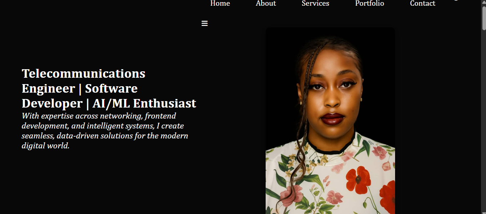

With expertise across networking, frontend development, and intelligent systems, I create seamless, data-driven solutions for the modern digital world.
About Me
I'm Ozomadu Joy Chidera, a forward-thinking Telecommunications Engineer and versatile Software Developer with a passion for solving complex problems at the intersection of networks, intelligent systems, and digital technologies. My academic foundation in Telecommunication Engineering, combined with hands-on industry experience, empowers me to build efficient, reliable, and innovative technology solutions.
Over the years, I have developed a unique blend of skills spanning network design and optimization, frontend web development, and machine learning. I’ve worked with Internet Service Providers (ISPs), contributed to real-world infrastructure using Cambium Networks hardware, and led AI-driven initiatives to improve business efficiency and user experience.
Whether I’m configuring network topologies, designing responsive web interfaces, or training predictive models, I approach every project with a strong attention to detail, a deep understanding of system architecture, and a drive for continuous improvement.
I’m currently exploring how emerging technologies like AI, IoT, and cloud-based networks can revolutionize communication systems, automate operations, and empower users in underserved communities.
Beyond the technical, I’m also a strong communicator, team player, and project leader. I thrive in fast-paced environments, enjoy collaborating across disciplines, and am committed to creating solutions that are not only functional but meaningful.
I’m currently open to opportunities in telecom, AI, or software engineering that allow me to grow, lead, and build impactful systems.
When I’m not coding or configuring networks, I enjoy exploring digital art and mentoring young engineers.
SKILLS
EXPERIENCE
EDUCATION
Technical Skills
Networking & Telecom
Network Configuration, ISP Systems (Cambium Networks), IP Routing, Network Monitoring, Cisco Devices
Software & Web Development
HTML, CSS, JavaScript, React, Git / GitHub, Responsive Design, VS Code
AI & Machine Learning
Python, scikit-learn, Model Training, Data Analysis, AI Workflow Design
Tools & Platforms
Canva, CapCut, PixelLab, Google Workspace, GitHub Pages, Google Apps Script
Personal Skills
Communication Clear technical writing & client-facing presentations
Problem-Solving Analytical approach to complex network & software issues
Leadership Team mentoring, project coordination, deadline ownership
Adaptability Quick to learn new tools, thrive in fast-paced environments
ipNX Nigeria | Network Engineer Intern (Feb 2025 – Present)
Supporting broadband service delivery using Cambium Networks, troubleshooting network outages, and optimizing client connectivity across Ibadan.
Nigerian Army Cyberwarfare Command | Machine Learning Intern (Aug 2023 – Jan 2024)
Led AI-driven research projects, contributed to cybersecurity initiatives, and trained predictive models for defense applications.
401 Flying Training School, Nigerian Air Force | Technical Intern (Dec 2022 – Apr 2023)
Assisted in radio communication systems, managed control tower equipment, and supported air traffic coordination.
Bachelor of Engineering (B.Eng.) in Telecommunications Engineering
Air Force Institute of Technology, Kaduna, Nigeria 2019 – 2024
Served as Course Representative and technical team lead. Final-year project: IoT-Based Water Quality Monitoring System.
Certifications & Professional Training
- Graduate member of the Nigerian society of Engineers (GMNSE)
- Engineering Safety Certification (Health and Safety Enviroment 1,2,3 with first aid and cpr)
- Artificial Intelligence & Machine Learning
- Cisco Certified Network Associate(CCNA)(In view)
What I Offer
Network Engineering
I design, configure, and maintain network infrastructure, ensuring secure and optimized connectivity for homes, businesses, and ISPs.
Web Development
I build responsive and user-friendly websites using modern technologies like HTML, CSS, JavaScript, and React.js.
AI & Machine Learning
I develop intelligent systems, train ML models, and use data-driven techniques to automate and enhance decision-making.
My Portfolio

Responsive Portfolio Website
This portfolio site was built from scratch using HTML, CSS, and JavaScript, optimized for employers and tech recruiters.
Amazon Clone (E-Commerce Site)
Built a fully responsive Amazon clone with shopping cart functionality, authentication, and dynamic product pages using HTML, CSS, and JavaScript.
IoT-Based Water Quality Monitoring System
Designed and implemented a system using NodeMCU and sensors to monitor water quality in real time — a key environmental safety project.
Music Genre Prediction with Python
Designed and trained a machine learning model to predict music genres based on user data and preferences using Python and scikit-learn.